Mục tiêu & Tóm tắt
Rèn luyện kỹ năng tạo, đổi tên, sao chép, di chuyển, xóa và khôi phục tệp/thư mục. Đây là nền tảng quan trọng để tổ chức dữ liệu học tập khoa học.
Quy trình thực hiện
Nội dung chi tiết
1. Mở File Explorer
Nhấn tổ hợp phím Windows + E hoặc nhấp vào biểu tượng thư mục màu vàng trên thanh tác vụ.
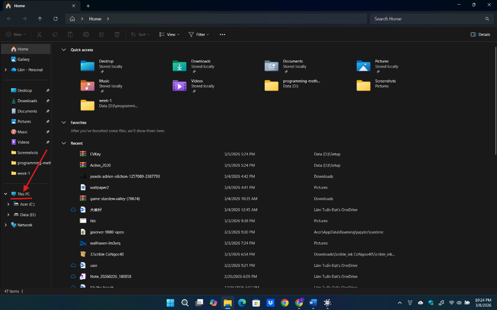
2. Truy cập ổ đĩa/thư mục
Ở cột bên trái, nhấp vào This PC, sau đó nhấp đúp vào một ổ đĩa không phải ổ hệ thống (ví dụ: ổ D: hoặc E:). Nếu chỉ có ổ C:, hãy vào thư mục Documents.
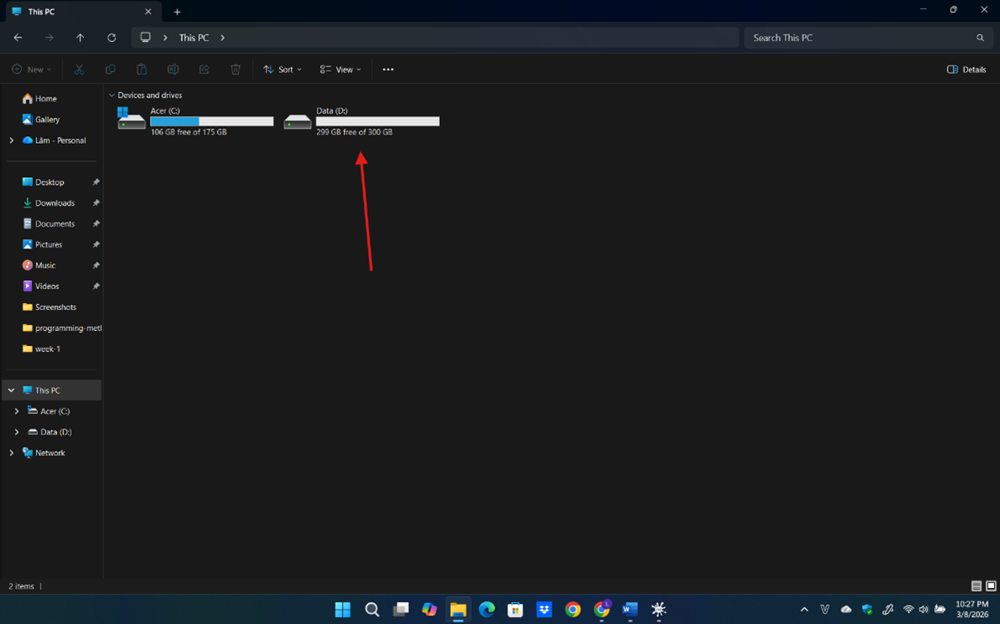
3. Tạo thư mục mới
Nhấp chuột phải vào khoảng trống → New → Folder. Đặt tên thư mục là ThucHanh_hotensinhvien (ví dụ: ThucHanh_Lâm Tuấn Đạt).
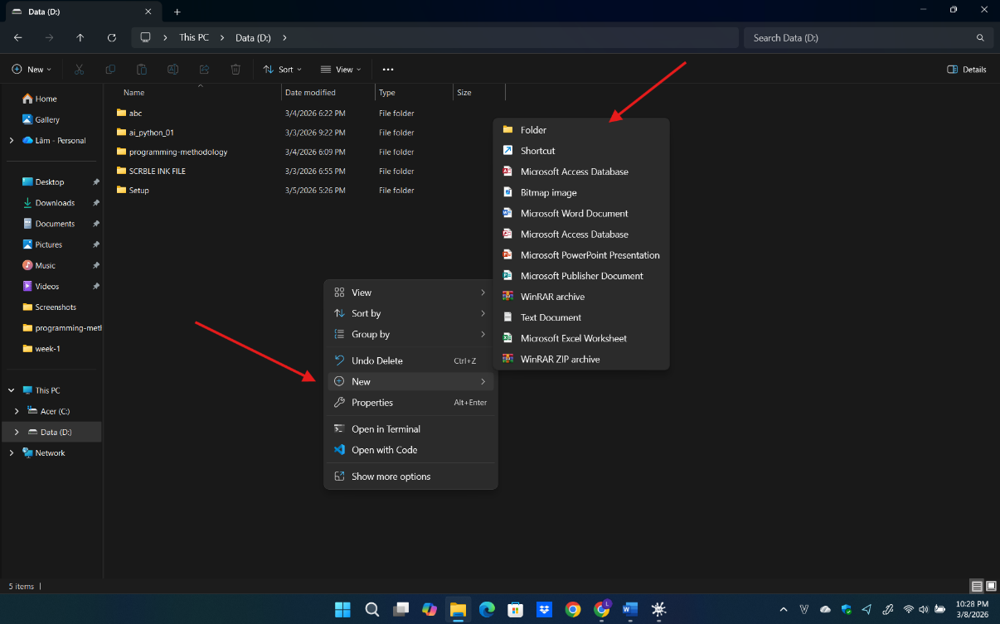
4. Vào thư mục vừa tạo
Nhấp đúp vào thư mục ThucHanh_Lâm Tuấn Đạt.
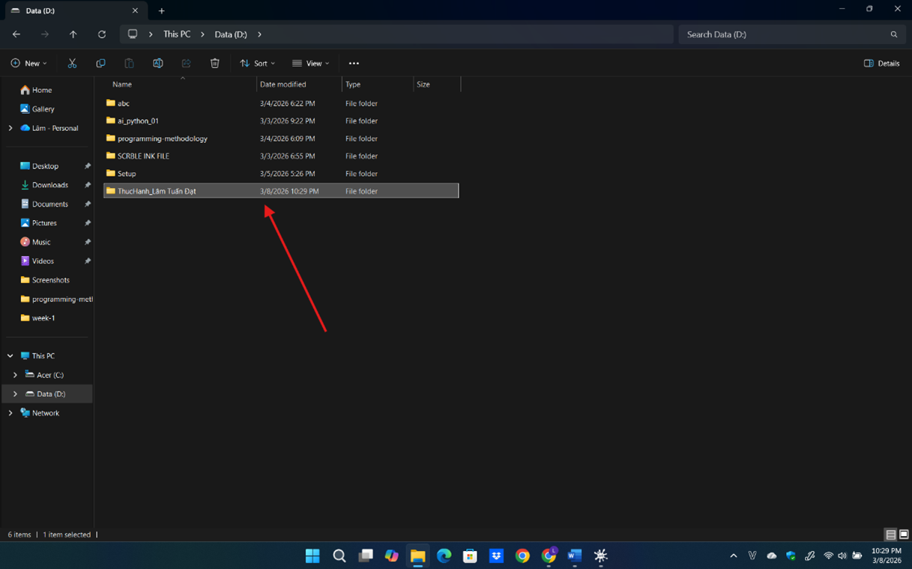
5. Tạo tệp tin văn bản
Nhấp chuột phải → New → Text Document. Đặt tên là GhiChu.txt.
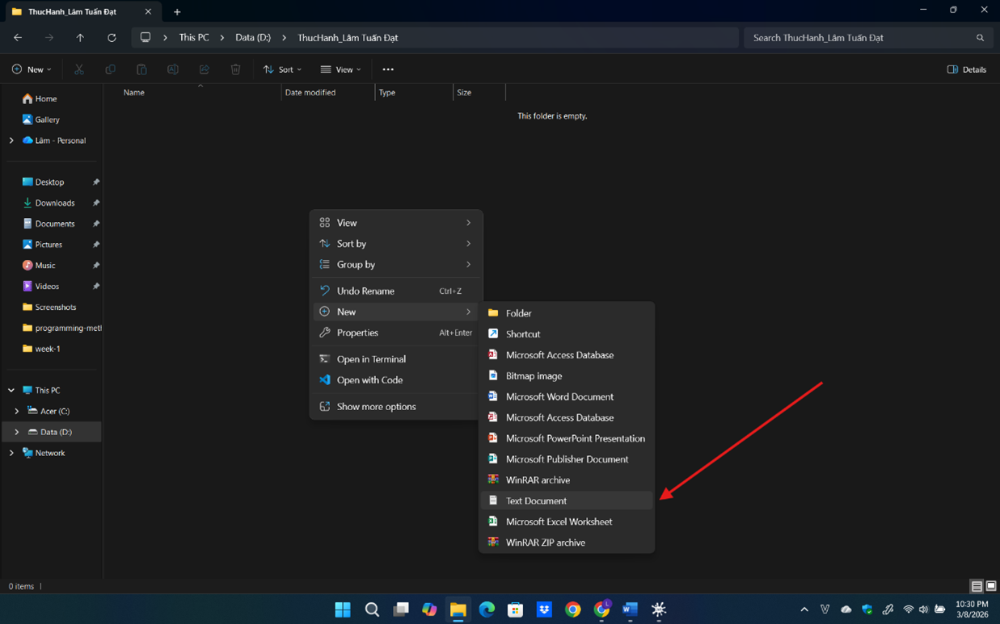
6. Đổi tên tệp tin
Nhấp chuột phải vào tệp GhiChu.txt → Rename. Đổi tên thành GhiChuQuanTrong.txt.
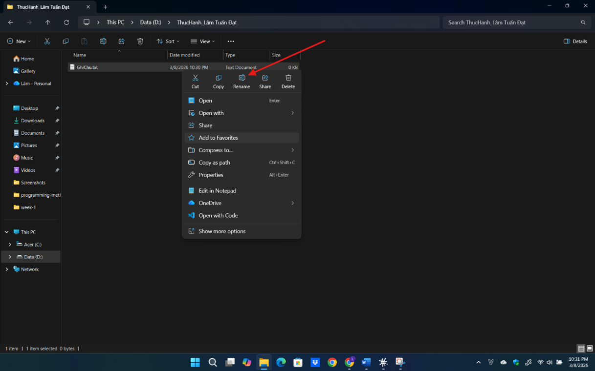
7. Tạo thư mục con
Trong thư mục ThucHanh_NguyenVanA, tạo thư mục TaiLieu.
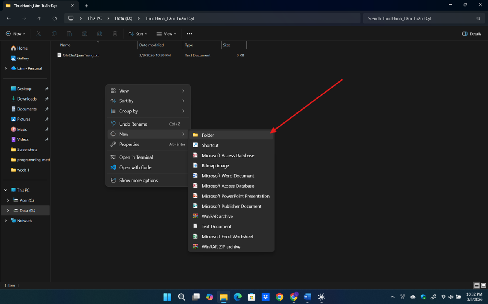
8. Sao chép tệp tin (Copy & Paste)
- Chọn GhiChuQuanTrong.txt
- Copy (Ctrl+C)
- Mở thư mục TaiLieu
- Paste (Ctrl+V)
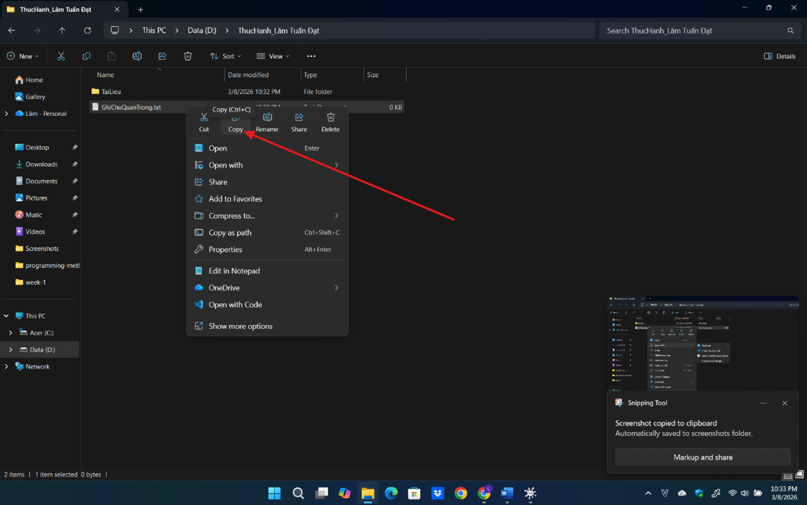
9. Di chuyển tệp tin (Cut & Paste)
- Tạo tệp DiChuyen.txt
- Cut (Ctrl+X)
- Mở TaiLieu
- Paste (Ctrl+V)
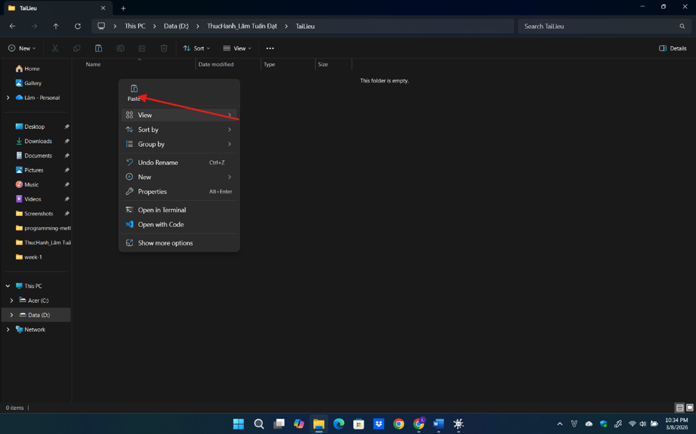
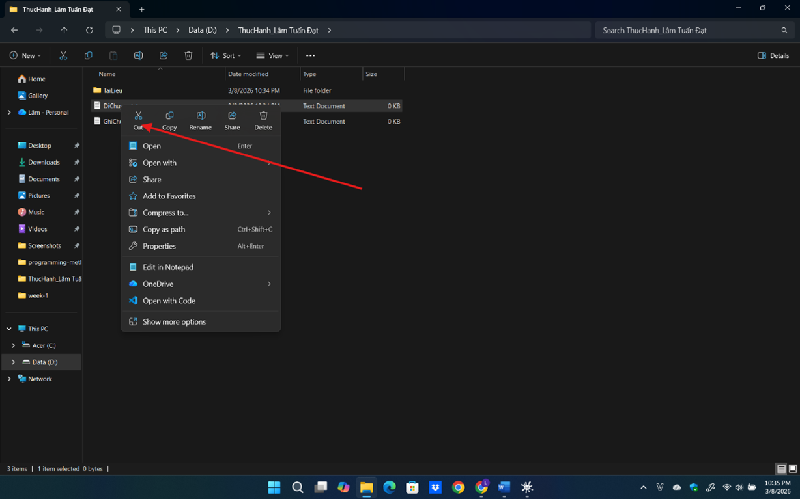
10. Xóa tệp tin
Trong thư mục TaiLieu, nhấp chuột phải vào GhiChuQuanTrong.txt và chọn Delete.
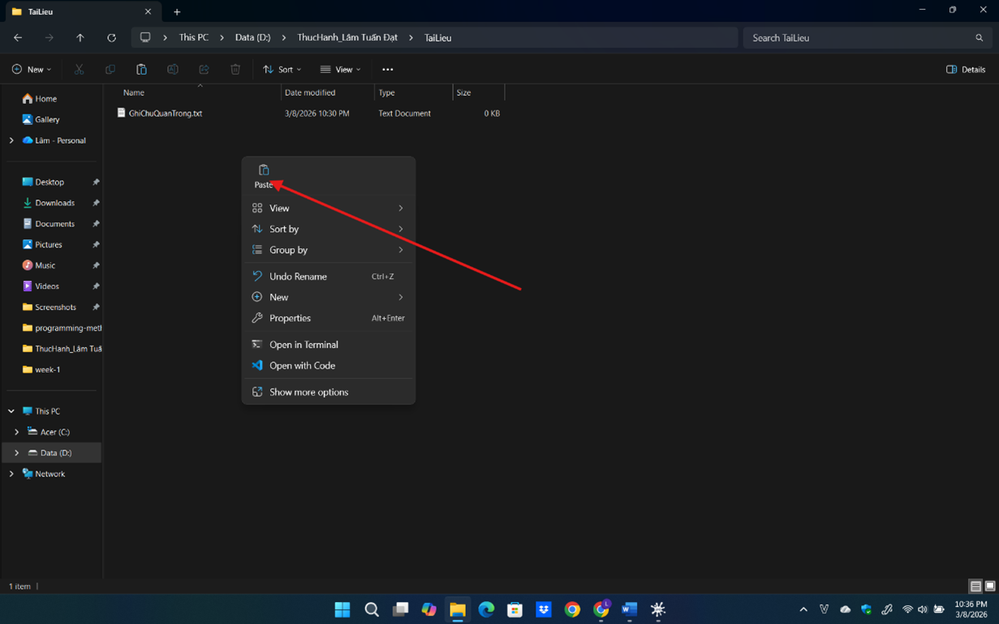
11. Xóa vĩnh viễn
Chọn DiChuyen.txt → Shift + Delete → xác nhận xóa.
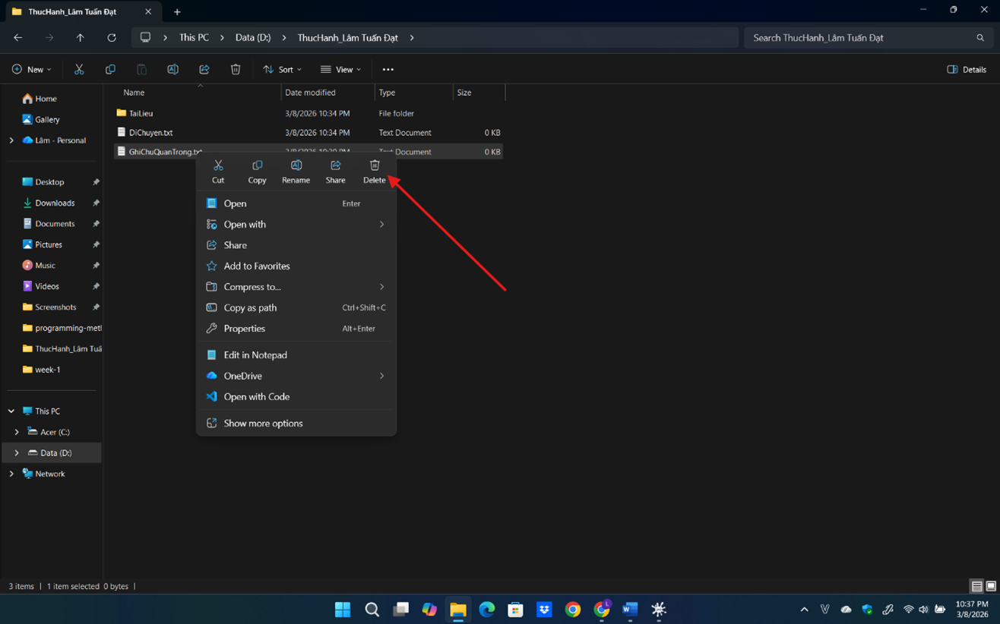
12. Khôi phục từ Thùng rác
Mở Recycle Bin → chọn GhiChuQuanTrong.txt → Restore.
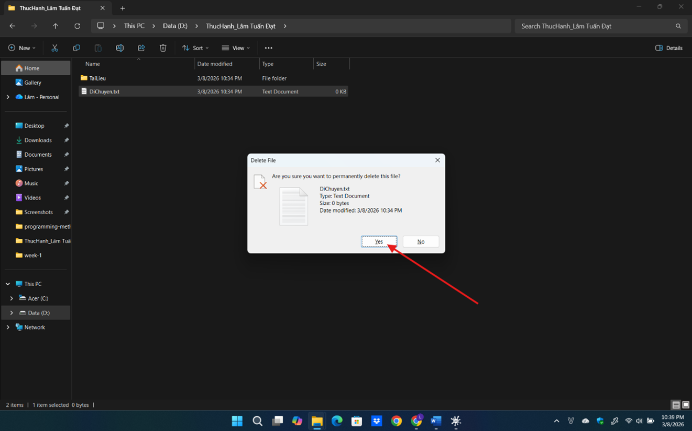
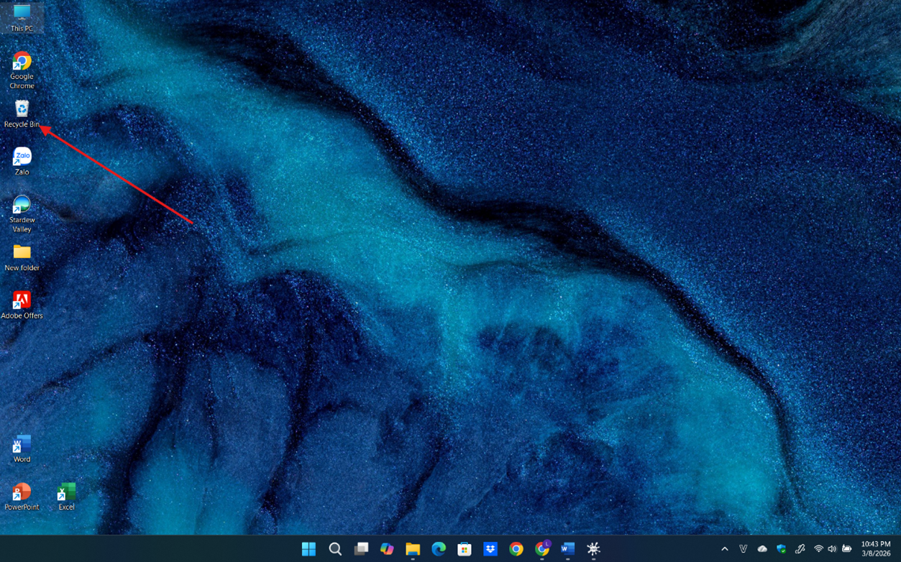
Bài học rút ra / Kỹ năng đạt được
- Biết tổ chức thư mục học tập theo cấu trúc rõ ràng.
- Thành thạo các thao tác cơ bản với tệp và thư mục.
- Hình thành thói quen đặt tên file dễ hiểu và dễ tìm kiếm.